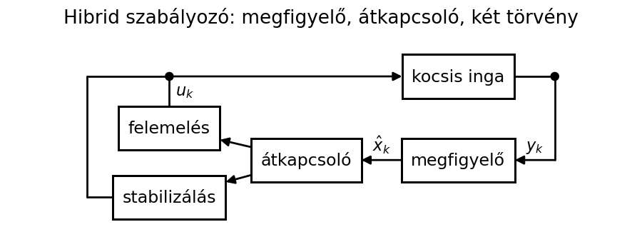
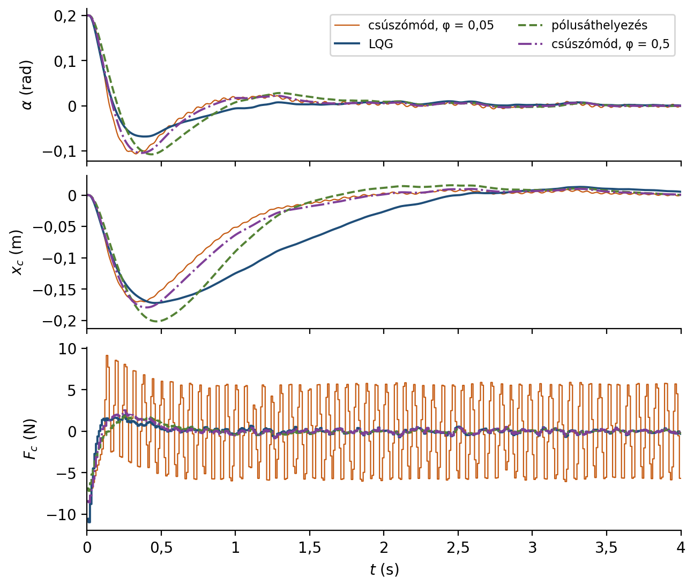
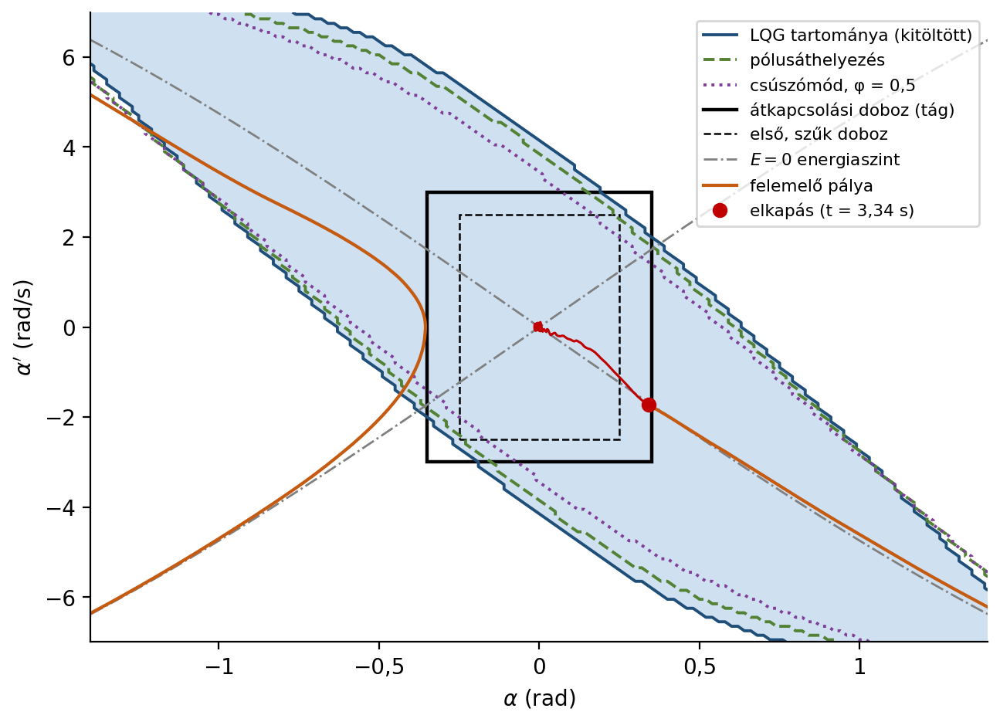

A kocsin ülő inga lógó helyzetből indul. A feladat: a kocsi ide-oda mozgatásával lendítsük fel, kapjuk el a felső helyzetben, tartsuk ott zajos érzékelők mellett, és közben a kocsi ne fusson le a pályáról. Ugyanez a dinamika jelenik meg egy rakéta függőlegesen tartásakor vagy egy kétkerekű robot egyensúlyozásakor.
Egyetlen szabályozó erre nem elég. A felső helyzet közelében a lineáris modell jól működik, lent viszont semmit sem ér. Ezért két szabályozót építünk, egy felemelőt (swing-up) és egy stabilizálót, és megírjuk az átkapcsolás szabályát. A tervezési ciklust a 1. záróprojekt: DC-motor pozíciószabályozása jegyzőkönyvmintája szerint követjük.
Mielőtt tovább olvasol, tippeld meg: az inga felső helyzetben tartásához vagy a felemeléséhez kell-e nagyobb erő? Az animáció megadja a választ.
A kocsi néhány ütemes lökéssel energiát pumpál az ingába, akár a hintán ülő gyerek. Amikor az inga elég közel ér a felső helyzethez, és elég lassú, a szabályozó átvált a lineáris törvényre, amely „elkapja”. A meglepő válasz: az alapforgatókönyvben a felemelés és az elkapás legnagyobb ereje mindössze kb. N, miközben egy álló, de radiánnal kitérített inga visszaállítása kb. N-t kér. Az elkapás s-nál történik, a kocsi legfeljebb m-re megy a középtől.
Az animáción három szakaszt érdemes külön figyelni. Az elsőben a kocsi ütemesen ide-oda jár, és a lengés amplitúdója lépésről lépésre nő, mert minden fél periódusban energiát adunk hozzá. A másodikban az inga már majdnem a tetejéig jut, és lelassul: ekkor teljesül az átkapcsolási feltétel. A harmadikban a lineáris törvény néhány tizedmásodperc alatt felállítja a rudat, majd a kocsit visszaviszi a pálya közepére. A zajos mérés miatt az erő ott sem nulla, hanem kis amplitúdóval remeg.

Kitalált, didaktikai követelmények: felemelés és elkapás lógó helyzetből legfeljebb s alatt; m; N; az utolsó s-ban a valódi szög négyzetes középértéke (RMS) mrad; egy s-os, N·s impulzusú lökés kivédése. Hardver: ms, egy minta késleltetés; mért jelek és , mm és mrad szórású zajjal (rögzített mag: ). Minden törvény ugyanazt a zajsort kapja, és minden futás új szabályozópéldánnyal indul. A zaj és a hardver értékei kitaláltak; nem egy konkrét berendezés mérései.
A lista szándékosan tartalmaz egymásnak feszülő célokat. A gyors felemelés nagy gyorsulást és hosszú pályát kíván, a rövid pálya óvatos mozgást; a kis szögingadozás nagy erősítést, a zaj viszont kisebbet. A jegyzőkönyv feladata, hogy a választott kompromisszum látható és megismételhető legyen.
A nemlineáris modell a Állapotváltozós alak és a futó példák modelljei alfejezeté, , a felső helyzet.
import numpy as np
from controlkit import models, projects as pj, structure as st
A, B = models.CartPendulum().linearized()
C = np.eye(4)[[0, 2]]
print("felső helyzet pólusai:", np.sort(np.linalg.eigvals(A).real).round(3))
print("irányíthatósági rang:", st.numerical_rank(st.ctrb(A, B)))
for name, Cm in [("x_c és alpha", C), ("csak x_c", C[:1]), ("csak alpha", C[1:])]:
print(f"megfigyelhetőségi rang, {name}: {st.numerical_rank(st.obsv(A, Cm))}")felső helyzet pólusai: [-5.607 -0.143 0. 5.568]
irányíthatósági rang: 4
megfigyelhetőségi rang, x_c és alpha: 4
megfigyelhetőségi rang, csak x_c: 4
megfigyelhetőségi rang, csak alpha: 3Egy instabil pólus van, 1/s. Ha csak -t mérnénk, a kocsi helyzete nem volna megfigyelhető. Csak -vel a rendszer elvben megfigyelhető, de Alapvető korlátok megmutatta, hogy ekkor a legjobb szabályozó is rendkívül törékeny. Ezért mindkét jelet mérjük. A rangtáblázat a Irányíthatóság és a Megfigyelhetőség és dualitás tesztjeit alkalmazza; a rang csak igen–nem választ ad, azt nem, hogy a becslés vagy a beavatkozás mennyire „drága”.
A felemelés alatt a szög a teljes körön mozog, a lineáris Kálmán-szűrő modellje itt hamis. A megoldás egyszerű: a predikció a nemlineáris modell egy Runge–Kutta-lépése, a korrekció a A Kálmán-szűrő mint optimális megfigyelő: dualitás referencia erősítése:
ahol
a modell léptetése, a szöginnovációt pedig
közé tördeljük. Ez egyszerűsített kiterjesztett Kálmán-szűrő rögzített
erősítéssel. Miért nem differenciáljuk egyszerűen a méréseket? Az
mrad zaj
ms-os differenciából kb.
rad/s szórású szögsebességet adna, amit a
-es
sebességerősítés közvetlenül erővé alakítana. A modell alapú predikció
ezt a zajt erősen simítja. A megfigyelő a ténylegesen ható, vagyis egy
mintával késleltetett parancsot kapja. Optimalitást nem állítunk, de a
becslési hiba linearizált dinamikájának spektrálsugara minden vizsgált
(álló helyzeti) szögnél
alatt van (a test_projects ellenőrzi).
Mindhárom ugyanazt a becsült állapotot kapja, alakú (vagy annak nemlineáris változata):
A három törvény más-más gondolatból született. Az LQR a költséget minimalizálja, és a súlyokból adódik az erősítés. A pólusáthelyezés a zárt kör dinamikáját írja elő. A csúszómód egy felületet jelöl ki, amelyen az állapot a kívánt módon mozog, és a kapcsoló tag tartja rajta akkor is, ha a modell valamennyit téved. Hogy melyik előny számít a gyakorlatban, azt a forgatókönyvek döntik el.
laws = pj.pendulum_laws()
for name, law in laws.items():
L = pj.pendulum_loop_metrics(law)
print(f"{name:7s} K_ekv = {np.round(law.gain(), 1)} PM {L.pm:4.1f}°, "
f"tau_m {1000 * L.tau_m:4.1f} ms, Ms {L.Ms:.2f}")
narrow = pj.sliding_law(phi=0.05)
print("csúszó, phi = 0,05: a linearizált hurok stabil?",
pj.pendulum_loop_metrics(narrow).stable)LQG K_ekv = [ -8.8 -10. 51.3 9.3] PM 28.3°, tau_m 35.7 ms, Ms 2.30
pólus K_ekv = [-8.5 -6.7 33.5 6.4] PM 26.5°, tau_m 42.6 ms, Ms 2.26
csúszó K_ekv = [-13.5 -11.3 46.1 9.1] PM 26.1°, tau_m 35.9 ms, Ms 2.37
csúszó, phi = 0,05: a linearizált hurok stabil? FalseA folytonos LQR -os tartaléka a Kálmán-szűrővel -ra, mintavétellel és késleltetéssel -ra olvad. A LQG, a szeparációs elv és a robusztusság határai szerint az LQG-nek nincs garantált tartaléka. A keskeny határrétegű csúszómód egyenértékű erősítése olyan nagy, hogy ms-os mintavétellel a lineáris hurok instabil: a rendszer csattog (Csúszómódú szabályozás ízelítő).
Az inga energiája a kocsihoz képest, a felső nyugalmi helyzettől mérve:
Fent, állva , lent, állva J. A mozgásegyenlet , ezért
A kocsi gyorsulása tehát közvetlenül adagolja az energiát. A képletben nincs benne maga a gravitáció: az csak átalakítja a mozgási és a helyzeti energiát egymásba, energiát nem ad hozzá. A hintánál is a jó pillanatban végzett mozdulat számít: ha az szorzat előjele megfordul, a kívánt gyorsulás iránya is fordul. Åström és Furuta típusú szabállyal (ellenőrizendő: Åström–Furuta 2000, a konstansok a saját választásunk):
amelyet még -ra vágunk. Az első tag hiányzó energiánál () növeli -t, a másik kettő a kocsit a pálya közepén tartja. Itt , m/s², . Az erőt a mozgásegyenlet inverze adja (részleges visszacsatolásos linearizálás, Visszacsatolásos linearizálás).
Átkapcsolás. Stabilizálás, ha rad és rad/s; vissza, ha rad. A kétféle küszöb (hiszterézis) megakadályozza a sűrű váltogatást. A küszöböket a vonzási tartomány alapján választjuk.
A felemelő törvény a becsült állapotból dolgozik, és az erő itt is N-ra vágott. A és tag nélkül az energiaszabályozás a kocsit egy irányba sodorhatná; velük viszont a hozzáadott energia kisebb, ezért a középen tartás és a gyors felemelés egymással verseng.
print("törvény forgatókönyv ok t_elk x_max F_max RMS(a) std(F)")
for name, law in laws.items():
for sname, sc in pj.pendulum_scenarios().items():
m = pj.pendulum_metrics(pj.simulate_pendulum_project(law, sc))
print(f"{name:7s} {sname:14s} {str(m['ok']):5s} {m['t_catch']:5.2f} {m['x_max']:6.2f} "
f"{m['u_max']:6.1f} {1000 * m['rms_alpha']:6.1f} {m['u_std']:6.2f}")
print(f"{name:7s} legnagyobb kivédett lökés: {pj.pendulum_max_push(law):.0f} N (0,1 s)")törvény forgatókönyv ok t_elk x_max F_max RMS(a) std(F)
LQG felemelés True 3.34 0.72 6.0 3.3 0.31
LQG kis kitérés True 0.00 0.17 11.0 4.1 0.28
LQG lökés True 0.00 0.28 16.0 7.6 0.28
LQG nehezebb inga True 2.96 0.66 6.1 3.4 0.30
LQG legnagyobb kivédett lökés: 16 N (0,1 s)
pólus felemelés True 3.34 0.72 6.0 4.3 0.20
pólus kis kitérés True 0.00 0.20 7.2 4.8 0.19
pólus lökés True 0.00 0.42 14.9 10.2 0.19
pólus nehezebb inga True 2.96 0.66 5.5 4.5 0.20
pólus legnagyobb kivédett lökés: 14 N (0,1 s)
csúszó felemelés True 3.34 0.72 6.0 3.8 0.27
csúszó kis kitérés True 0.00 0.18 8.6 4.3 0.24
csúszó lökés True 0.00 0.41 12.4 6.6 0.24
csúszó nehezebb inga True 2.96 0.66 5.5 4.0 0.26
csúszó legnagyobb kivédett lökés: 12 N (0,1 s)
A táblázat oszlopai: sikeres-e a futás, mikor történt az elkapás (s), a kocsi legnagyobb kitérése (m), a legnagyobb erő (N), a szög RMS-értéke az utolsó s-ban (mrad) és ugyanott az erő szórása (N). Az elkapás ideje és a felemelés alatti pályakihasználtság mindhárom törvénynél azonos, mert a felemelő szabályozó közös; a különbség az átkapcsolás után kezdődik.
Mindhárom törvény teljesíti a követelményeket. Az LQG tűri a legnagyobb lökést ( N) és mozdítja a legkevésbé a kocsit, cserébe a legzajosabb az ereje. A pólusáthelyezés a legkíméletesebb a beavatkozóval. A -ös csúszómód ezen a modellen nem hoz előnyt; a -ös változat stabilnak látszik, de az erő szórása kb. N, ami valódi hajtást koptatna és rezonanciákat gerjesztene.
Figyeld meg a táblázatban a nehezebb ingát is: a -os tömegnövekedés a tartás minőségén alig változtat, mert a visszacsatolás a modellhibát minden mintában korrigálja. Ez a Modellbizonytalanság, robusztus stabilitás és H∞-ízelítő gondolatának nemlineáris, szimulációs ellenőrzése: nem bizonyítás, csak néhány rögzített eset.

A vonzási tartományt (Ljapunov-stabilitás) itt numerikusan mérjük: kezdőhelyzetből, valódi állapotból indítjuk a mintavett szabályozót, N korláttal és a m-es pályával. A tartomány ferde sáv: ha az inga a függőleges felé mozog (), sokkal messzebbről is elkapható, mint ha távolodik. Az átkapcsolási doboz -a esik az LQG tartományába; a kilógó sarkokba a felemelő pálya nem ér be, mert az inga alulról közeledve a függőleges felé mozog. A kép csak metszet: az elkapáskor és nem nulla.
alpha = np.arange(0.02, 1.5, 0.01)
for u_max in (5.0, 20.0):
edge = []
for rail in (np.inf, 0.75):
ok = pj.pendulum_roa(laws["LQG"], alpha, np.array([0.0]), u_max=u_max, x_max=rail)[0]
edge.append(alpha[~ok][0] - 0.01)
quasi = np.arctan(u_max / (0.7 * 9.81))
print(f"F_max {u_max:2.0f} N: elkapható alpha ≤ {edge[0]:.2f} rad (pálya nélkül), "
f"{edge[1]:.2f} rad (0,75 m); kvázistat. {quasi:.2f} rad")
for r in pj.pendulum_length_study():
print(f"l = {r['l']:5.3f} m: p = {r['p']:5.2f} 1/s, késleltetési tartalék "
f"{1000 * r['tau_m']:4.1f} ms, Ms {r['Ms']:.2f}")F_max 5 N: elkapható alpha ≤ 0.48 rad (pálya nélkül), 0.44 rad (0,75 m); kvázistat. 0.63 rad
F_max 20 N: elkapható alpha ≤ 0.96 rad (pálya nélkül), 0.63 rad (0,75 m); kvázistat. 1.24 rad
l = 0.075 m: p = 11.15 1/s, késleltetési tartalék 20.9 ms, Ms 2.50
l = 0.150 m: p = 7.88 1/s, késleltetési tartalék 27.5 ms, Ms 2.38
l = 0.300 m: p = 5.57 1/s, késleltetési tartalék 35.7 ms, Ms 2.30
l = 0.600 m: p = 3.93 1/s, késleltetési tartalék 46.6 ms, Ms 2.15Három korlát látszik. A beavatkozó erő a kvázistatikus határ alatt tartja az elkapható szöget; a pályahossz ennél is szigorúbb: N-nal pálya nélkül rad, a m-es pályán csak rad kapható el. A rövidebb inga instabil pólusa gyorsabb, ezért kisebb késleltetést visel el, hiába terveztük újra az LQG-t. Ezek a rendszer tulajdonságai; jobb algoritmus sem törli el őket. A Alapvető korlátok ökölszabálya is teljesül: a stabilizáláshoz a vágási frekvencia legalább kb. rad/s (itt rad/s), miközben a késleltetés felülről korlátozza, mekkora sávszélesség engedhető meg (ellenőrizendő: Skogestad–Postlethwaite konstansai). A ms-os mintavétel és a 1/s együtt kényelmesebb tartalékot hagy, mint a cm-es inga 1/s-os pólusa.
Az első átkapcsolási feltétel szűkebb volt ( rad, rad/s). A -kal nehezebb inga ( kg) ezzel soha nem kapcsol át: a modellhiba miatt a lendítés úgy áll be, hogy az inga rad körül visszafordul.
heavy = pj.pendulum_scenarios()["nehezebb inga"]
for catch in (dict(alpha_on=0.25, rate_on=2.5), None):
m = pj.pendulum_metrics(pj.simulate_pendulum_project(laws["LQG"], heavy, catch=catch))
print("szűk doboz:" if catch else "tág doboz: ", "sikeres", m["ok"],
f"t_elk {m['t_catch']:.2f}")
for extra in (1, 2):
sc_up = pj.PendulumScenario("fel", extra_delay=extra, t_end=12)
sc_st = pj.PendulumScenario("áll", alpha0=0.1, swingup=False, t_end=8, extra_delay=extra)
up = pj.pendulum_metrics(pj.simulate_pendulum_project(laws["LQG"], sc_up))
hold = pj.pendulum_metrics(pj.simulate_pendulum_project(laws["LQG"], sc_st))
print(f"+{extra} ismeretlen minta késés: felemelés {up['ok'] and up['rail_ok']}, "
f"tartás {hold['ok']}")szűk doboz: sikeres False t_elk inf
tág doboz: sikeres True t_elk 2.96
+1 ismeretlen minta késés: felemelés True, tartás True
+2 ismeretlen minta késés: felemelés False, tartás TrueA felemelés érzékenyebb a modellhibára és a késleltetésre, mint az egyensúlyozás: az energiaszabályozás csak közvetve, az energián keresztül korrigál, és a siker azon múlik, hogy a pálya beletalál-e az átkapcsolási dobozba. Az egyensúlyozás ezzel szemben minden mintában közvetlenül javítja a hibát. A javítás itt a tágabb doboz volt: nagyrészt a vonzási tartományon belül marad, de elég nagy ahhoz, hogy a kissé hibás modellel is elkapjuk az ingát. Paramétersöprés szerint a stabilizálás – kg között mindhárom törvénnyel működik, a felemelés kg-tól nem, kg-on és alatta pedig a kocsi túlfut a pályán. kg-os kocsival a pólusáthelyezés és a csúszómód elbukik, az LQG nem.
A paramétersöprés nem helyettesíti a Ljapunov-stabilitás típusú garanciát, és a hibákat is csak egyenként változtattuk. Valódi eszközön a modellt előbb mérésekből kell pontosítani (súrlódás, holtjáték, a hajtás dinamikája), és a küszöböket a mért tartományon újra ellenőrizni.
| Pont | Tartalom |
|---|---|
| 1. Feladat | felemelés s, m, N, RMS mrad, N·s lökés |
| 2. Modell | CTMS-értékek; nemlineáris szimuláció, RK4; zaj mm / mrad, mag |
| 3. Jelöltek | LQG, pólusáthelyezés, csúszómód; közös megfigyelő és felemelés |
| 4. Iterációk | szűk átkapcsolás nehezebb ingánál elbukott; csattogott |
| 5. Eredmény | felemelés s; mindhárom törvény teljesíti a követelményeket |
| 6. Robusztusság | –; ismeretlen mintánál a felemelés elbukik |
| 7. Választás | LQG: legnagyobb lökés- és kocsitömeg-tűrés; zajosabb erő |
| 8. Nyitott | súrlódás, holtjáték, motordinamika, kábel: nem modelleztük |
Továbbvitt eredmény. A projektek mintája (hibrid szabályozó, közös érzékelőmodell, rögzített forgatókönyvek, vonzási tartomány, jegyzőkönyv a sikertelen iterációkkal) és a számok a Vegyes vizsgafeladatsor anyagát adják.
Valódi kocsis ingán csak áramkorláttal, véghelyzet-kapcsolóval, vészleállítóval, rögzített pályán és felügyelet mellett próbáld ki; a lengő rúd sérülést okozhat.
A kocsis inga teljes feladatát hibrid szabályozó oldja meg: energiaalapú felemelés, hiszterézises átkapcsolás, majd stabilizálás zajos mérésekből, nemlineáris predikciójú, rögzített erősítésű megfigyelővel. Az LQG, a pólusáthelyezés és a csúszómód a névleges forgatókönyveken egyaránt megfelelt; a diszkrét hurkok fázistartaléka csak –. Az elkapható szöget az erő (kvázistatikusan ) és a pályahossz korlátozza, a rövidebb inga kevesebb késleltetést visel el. Az átkapcsolási feltételt a vonzási tartományhoz és a modellhibához kell igazítani. A jegyzőkönyvmintát és az eredményeket a vizsgafeladatsor használja.
for a_max in (4.0, 5.0, 6.0):
row = []
for sname in ("felemelés", "nehezebb inga"):
sc = pj.pendulum_scenarios()[sname]
m = pj.pendulum_metrics(pj.simulate_pendulum_project(laws["LQG"], sc,
swing=dict(a_max=a_max)))
row.append(f"{sname}: {m['ok']}, x_max {m['x_max']:.2f} m, t {m['t_catch']:.2f} s")
print(f"a_max {a_max:.0f}:", "; ".join(row))a_max 4: felemelés: True, x_max 0.56 m, t 2.80 s; nehezebb inga: True, x_max 0.52 m, t 3.85 s
a_max 5: felemelés: True, x_max 0.72 m, t 3.34 s; nehezebb inga: True, x_max 0.66 m, t 2.96 s
a_max 6: felemelés: True, x_max 0.87 m, t 2.07 s; nehezebb inga: True, x_max 0.79 m, t 2.19 sNagyobb
gyorsabb lendítést, de hosszabb pályát igényel:
m/s² már túllépi a
m-t. A
m/s² ezen a két forgatókönyvön nagyobb pályatartalékot ad, a nehezebb
ingát viszont lassabban kapja el. A végleges értéket a teljes
paramétersöprésen kellene kiválasztani: két forgatókönyv ehhez kevés. 5.
Egy lehetséges út: a rácson futtatott pendulum_roa sikeres
pontjaira kiszámolod
-t,
és a legnagyobb olyan
-t
választod, amelynél a halmazban nincs sikertelen pont.
from controlkit import lqr as lq
X = lq.reference_pendulum_lqr_discrete()["X"]
al, ad = np.linspace(-1.2, 1.2, 61), np.linspace(-6, 6, 61)
ok = pj.pendulum_roa(laws["LQG"], al, ad)
AA, WW = np.meshgrid(al, ad)
V = X[2, 2] * AA**2 + 2 * X[2, 3] * AA * WW + X[3, 3] * WW**2
c = V[~ok].min()
print(f"c ≈ {c:.2f}; az ellipszisen belüli rácspontok: {np.sum(V < c)}, "
f"a vonzási tartomány pontjai: {ok.sum()}")c ≈ 4.69; az ellipszisen belüli rácspontok: 1541, a vonzási tartomány pontjai: 1785Az ellipszis a rácson ( mellett) csak sikeres pontot tartalmaz, és a tartomány kb. -át fedi le; a ferde sáv nyúlványait kihagyja. Nemnulla kocsiállapotnál a teljes -es alak kell, és az új -t is újra ellenőrizni kell. 6. Három állapotpárral hatdimenziós modell; a felemeléshez közös energia helyett pályatervezés (optimális vezérlés) szokásos, a stabilizáláshoz mindkét szöget mérni kell, és az instabil pólusok gyorsabbak, ezért rövidebb és erősebb hajtás kell.